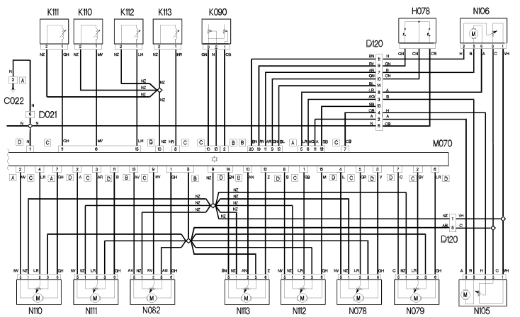

E6020 AIR CONDITIONING Wiring Diagram
- Path
- Electrical equipment > ELECTRICAL FUNCTIONS > E60 CLIMATE CONTROL SYSTEM > E6020 AIR CONDITIONING > E6020 AIR CONDITIONING Wiring Diagram
- Kind
- topic
- Applies to
- engines: 2.0 TB, 2.4 20V, 3.0 V6, 3.2 V6; all production periods
- Interactive page
- https://sloeber94.github.io/elrnDB-lThss/en/#/841008123
Applies to: engines: 2.0 TB, 2.4 20V, 3.0 V6, 3.2 V6; all production periods
Wiring Diagram


Components
Component code | Name | Assembly reference |
|---|---|---|
Solar cells for sun roof (CTA) | - | |
Engine compartment junction unit | 5505A | |
Junction unit under dashboard | - | |
Luggage compartment junction unit (CVB) | - | |
Left front earth | - | |
Driver's dashboard earth | - | |
Air conditioning unit earth | - | |
Passenger dashboard earth | - | |
Centre dashboard earth | - | |
Air conditioning-heater front coupling | - | |
Dashboard/rear coupling | - | |
Dashboard/air conditioning-heater coupling | - | |
Left front door coupling | - | |
Console/centre bridge coupling | - | |
Short circuit coupling | - | |
Climate control/diffused air device coupling | - | |
Light for vent in rear centre console | - | |
Driver's vent light | - | |
Passenger side vent light | - | |
Right centre vent light bulb | - | |
Vent light on left pillar | - | |
Vent light on right pillar | - | |
Ignition switch | - | |
Diffused air vent control switches | - | |
- | ||
Solar sensor | - | |
RIGHT UPPER AIR DISTRIBUTION TEMPERATURE SENSOR | - | |
RIGHT LOWER AIR DISTRIBUTION TEMPERATURE SENSOR | - | |
LEFT LOWER AIR DISTRIBUTION TEMPERATURE SENSOR | - | |
LINEAR SENSOR FOR FANS | 5040B | |
Engine management control unit | 1056B | |
Luggage compartment control unit (NVB) | - | |
Info-telematic control unit (NIT) | - | |
Driver's door control unit (NPG) | - | |
Climate control sytem control unit | - | |
Left mixed air flap actuator | - | |
Right mixed air flap actuator | - | |
Outside air/recirculation intake flap actuator | - | |
Passenger compartment air fan | - | |
Right diffused air control actuator | - | |
Left diffused air control actuator | - | |
Right defrost air distribution actuator | - | |
Left defrost air distribution actuator | - | |
RIGHT AIR DISTRIBUTION ACTUATOR | - | |
LEFT AIR DISTRIBUTION ACTUATOR | - | |
Left external rear view mirror | - |
Topics linked from this page (46)
- A050 Solar cells for sun roof (CTA)
- B001 Engine compartment junction unit
- B002 Junction unit under dashboard
- B045 Luggage compartment junction unit (CVB)
- C010 Left front earth
- C015 Driver's dashboard earth
- C016 Air conditioning unit earth
- C020 Passenger dashboard earth
- C022 Centre dashboard earth
- D008 Air conditioning-heater front coupling
- D020 Dashboard/rear coupling
- D021 Dashboard/air conditioning-heater coupling
- D030 Left front door coupling
- D048 Console/centre bridge coupling
- D097 Short circuit coupling
- D120 Climate control/diffused air device coupling
- G044 Light for vent in rear centre console
- G047 Driver's vent light
- G048 Passenger side vent light
- G050 Right centre vent light bulb
- G057 Vent light on left pillar
- G058 Vent light on right pillar
- H001 Ignition switch
- H078 Diffused air vent control switches
- K064 Exhaust gas presence sensor
- K090 Solar sensor
- K110 Right upper air distribution temperature sensor
- K111 Right lower air distribution temperature sensor
- K113 Left lower air distribution temperature sensor
- K120 Linear sensor (for climate control)
- M010 Engine management control unit
- M063 Luggage compartment control unit (NVB)
- M065 Info-telematic control unit (NIT)
- M066 Driver's door control unit (NPG)
- M070 Climate control system control unit
- N078 Left mixed air flap actuator
- N079 Right mixed air flap actuator
- N082 Outside air/recirculation intake flap actuator
- N085 Passenger compartment air fan
- N105 Right diffused air control actuator
- N106 Left diffused air control actuator
- N110 Right defrost air distribution actuator
- N111 Left defrost air distribution actuator
- N112 Right air distribution actuator
- N113 Left air distribution actuator
- P060 Left external rear view mirror